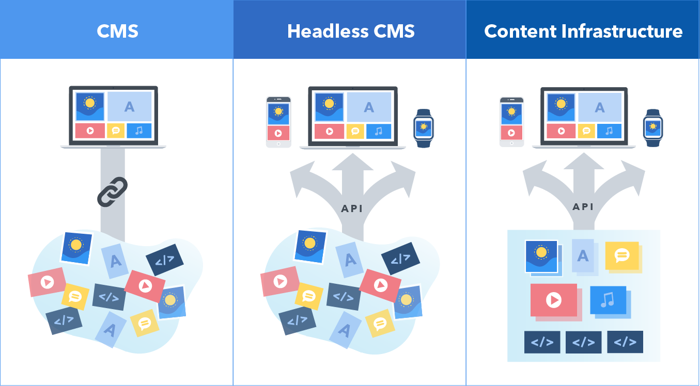

Контент-стратегія та використання новітніх інструментів управління контентом, таких як Headless CMS.
Контент-стратегія є ключовим аспектом будь-якого веб-сайту. Вона визначає, який контент повинен бути на сайті, як він повинен бути створений та яким чином повинен бути розміщений на сайті. Використання новітніх інструментів управління контентом може допомогти забезпечити ефективну контент-стратегію та зручний спосіб управління контентом на веб-сайті.
Headless CMS - це інструмент управління контентом, який дозволяє створювати та управляти контентом на веб-сайті, не пов'язуючи його з дизайном та шаблонами веб-сторінок. Замість цього, Headless CMS забезпечує зручний спосіб управління контентом за допомогою API, який дозволяє інтегрувати контент з будь-якою веб-сторінкою, додатком або сервісом. Це дозволяє розробникам та власникам сайтів швидко та зручно змінювати та оновлювати контент на веб-сайті без необхідності внесення змін до коду сторінки.
Headless CMS є особливо корисним для великих та складних веб-сайтів, де необхідно змінювати та оновлювати велику кількість контенту на різних сторінках сайту. Завдяки API, Headless CMS дозволяє автоматизувати багато процесів управління контентом та забезпечує швидку та ефективну роботу з контентом.
Крім Headless CMS, існує багато інших новітніх інструментів управління контентом, які можуть допомогти власникам сайтів забезпечити ефективну контент-стратегію та зручний спосіб управління контентом. Наприклад, Contentful, Strapi, Prismic та інші. Вони надають розширені можливості для управління контентом.